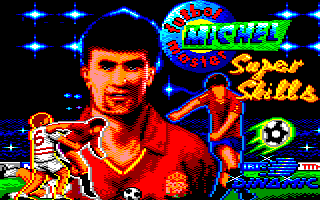

Míchel
 De: La Frikipedia, la enciclopedia extremadamente seria.
De: La Frikipedia, la enciclopedia extremadamente seria.
Míchel fue un jugador de furbo que militó en las filas del Real Mandril. Sex-simbol de las hinchadas de todos los equipos de Aspaña y parte del extranjero, que le recordaban cariñosamente (con un mítico himno que ha pasado al subconsciente colectivo) su intento de robarle el tabaco a Valderrama por el lado equivocado del pantalón. Cuando se retiró hacía las veces de comentarista deportivo hasta que decidió hacerse entrenador del Real Mandril Castilla, equipo que descendió. Actualmente dirige al Sevilla F.C..
Míchel como comentarista
 Un clásico a la altura del Pacman
En su etapa como comentarista nos dejó joyas del calibre de:
- El punto de penalty es como un pozo de petróleo.
- Portugal nos ha enseñado todo lo que hemos visto.
- Eriksson y Scolari podrían chutar los penaltis, ellos también han jugado al fútbol.
- Holanda y Suecia van empate a cero. "Es un partido de ataque voraz que se ha instalado en el cerocerismo".
- La barrera está en el mismo sitio que en la primera negociación.
- Hablando del cambio de bandas entre Figo y Cristiano Ronaldo: "Ha venido el jefe y le ha cambiado de oficina".
- De la Casa: "Rooney parece más mayor por el aspecto de su cara". Michel: "Seguramente haya tenido una infancia muy dura".
- Último partido de Francia. La cámara enfoca a un aficionado enorme, obeso y con un casco en la cabeza. Míchel comenta: "¿Este quién es? ¿Obélix?"
- Perotta y Gattuso están recuperando balones hasta en Septiembre. Van a septiembre por sus compañeros, por eso de recuperar..
- No ha sido gol porque se ha ido fuera.
- La mano de Trezeguet: "No han visto la mano la mitad del campo más uno. La mitad del campo que es Francia, más uno que es el árbitro".
- No sólo está jugando bien, sino que además está haciendo un gran partido.
- En una internada de Raul Bravo, "como se nota cuando un lateral entra por sorpresa, como sorprende..."
- Un córner tonto que se le ha ido a un griego. "Vaya regalo, ahora sólo queda abrirlo y ver lo que lleva. Ojalá sea un gol".
- Si le preguntan a un griego si le gusta jugar cara a la portería dirá, "Ah, ¿pero existe?".
- Se desmorona el Castillo de naipes griego, defensivamente hablando.
- Valerón, el amo del balón.
- En este partido puede pasar, incluso, cualquier cosa.
- Voller está más intranquilo y más de pie.
- Holanda se quiere tomar la sopa por donde más quema, por en medio.
- Una cosa es cortar el juego y otra cortar piernas.
- Menudo púgil es Wörns. Si te toca que te marque, mejor que te dediques a la lectura.
- Los peones están acosando a la reina holandesa. Deportivamente hablando, claro.
- A los gallos se les está erizando la cresta.
- Shaka se podría llamar "Shaka de banda", por que es lo único que hace en todo el partido...
- No cabe duda de que si quieren meter un gol el balón tiene que ir entre los tres palos.
- Si meten un gol más que el rival, ganan.
- Este partido hace rato que no tiene cinturón de seguridad.
- El Valencia es incapaz de meter ningún gol por que hay un Toldo bajo la portería.
- Gattuso no está gateando, está gattusseando.
- Gerard corre más que el balón.
- Rooney llevaba la cabeza entre las piernas.
- En partidos como éste, los defensas tienden a defender su propia portería.
- El jugador se ha hecho daño en el hombro, porque ha caído con la lengua encima del hombro.
- De la Casa: "El jugador ruso que acaba de chocar con su compatriota le está diciendo que ha sido él el que le ha golpeado". Míchel: "Y seguro que se lo ha dicho en ruso".
- ¡Como sigan a este ritmo de partido no van a durar ni tres horas!
- Como sigan jugando tan bien mejor será que los demás nos dediquemos a la lectura.
- Eso ha sido cuarto y mitad de kilo de penalty.
- El partido acabó 0-0, siendo el mismo resultado al descanso.
- A ver si cierran las puertas del campo, y se acaba el viento, jeje.
- El centro ha sido peligroso y además ayudado por un jugador que no estaba en la alineación, el viento.
- Siempre ira al balón, parece el muñeco diabólico.
- La línea recta a veces, no es buena consejera.
- Todos sabemos que de tanto ir el cántaro a la fuente se acaba rompiendo.
- Cuando llegas a la línea de fondo, balón atrás, tranquilo, siempre aparece un amigo.
- ¡Ha sacado una mano! ¡Ha sacado la otra! ¡Ha hecho el helicóptero!.
- Ese pase llevaba una tarjeta adherida que decía, "toma, mételo".
- El partido es como cuando vas a bañarte y cuando sales otro se ha puesto tu ropa.
- Tenían muchos metros pero venían en son de paz.
- Este futbolista no corre más porque la señora pájara le ha dado, con el bolso en la cabeza.
- Este partido es como conducir un coche sin volante.
- Ivan Campo da miedo, y no solo por su juego, ja, ja, ja.
- Lo difícil es pensarlo.
- La máxima del fútbol: para atacar hay que tener el balón.
- Holanda está atacando por donde la sopa más quema (por el centro).
- El partido está animoso.
- La banda izquierda de Francia es como un jardín con flores, no las pisa nadie.
- La mejor manera de defender con el balón y atacando.
- Mientras hay vida...hay segunda parte. (Champions: Milan, 1 - Celta, 0 al descanso).
- El Chelsea está atacando de manera reivindicativa.
- Albelda ha visto una tarjeta española, y el jugador amarillo no podrá jugar contra Serbia (Míchel, en un partido España-Bosnia).
- El seleccionador de Alemania, Rudi Voller, debería preguntarse si merece la pena jugar mal para perder igual.
- El partido va a acabar 0 a 0 a menos que a algun futbolista se le afile la flauta...
- Los jugadores ucranianos juegan con ventaja, van ganando 1-0.
- Cada vez que hace una entrada Lima sube el precio de la escayola (Míchel, en un España-Andorra).
- En un partido del Real Madrid contra la Roma que se jugaba a puerta cerrada: "Pues al final no ha venido nadie eh...".
- Jugar así es como estar dándole la pistola a un ladrón. Tanto se la das, que al final te roba.
- "Va a salir el sol antes de que le metan un gol al Madrid" (10 segundos antes de que el Madrid encajara un gol).
- "Estoy seguro que pronto marcará el Madrid. Están dando un baño a los alemanes" (En la siguiente jugada, gol del Bayern. El partido acabó 2-0).
- Ha sido una entrada muy dura en el tobillo de Aquiles.
- Yo creo que en este partido o empatan o gana uno de los dos.
- Menuda jugada indavadual. Perdón, indavadual.
- Dos jugadores chocan disputando un balón, Míchel: "ese cuerpo a cuerpo ha sido puramente físico"
- Al darle paso Jose Ángel de la Casa): Sí, Jose Ángel, sí...
Contacto con Diox
Un día, luego de haber se burlado de la ropa de un pijo, estos lo maldicieron por que son muy maricas para pegarle, y como es muy ignorante se asustó y le pidió ayuda a Diox mediante el juego de la copa. cuando apareció como el majestuoso monstruo de espaghetti volador que es, lo empezo a putear sólo como él sabe (y, es Diox) debido a lo mal que estaba jugando (en ese entonces hace 100 años más o menos era furbolista en club patético burretis y acababan de descender). Entonces hicieron un trato: Diox lo protegía con sus spaghettis cuando lo necesite si el retiraba del furbo.
El hueco legal
Como siempre sucede el idiota Míchel encontró un hueco legal y se convirtió en técnico estando a punto de llevar a varios equipos a la liga ´ (la liga acento, que va luego de la división z) por lo tuvieron que romper su trato, pero como se compró unos guardespaldas de la puta madre no tiene problemas.
Actualidad
Fue entrenador del Jeta FC, equipo que descenderá esta temporada. Actualmente está en el Sevilla F.C..
Sigue siendo un mal relator que debería debería dejar el puesto (por favor!)
Autor(es):
- Krusher
- Nexo
- Mu
- AioriaDeLeo
- Seymour M
- Viento
- Mcjevo
- Conan
- Gerrard
- Lleldorin
Frikipedia 2005-2016, Licencia
GFDL 1.2 - Extraído por FrikiLeaks